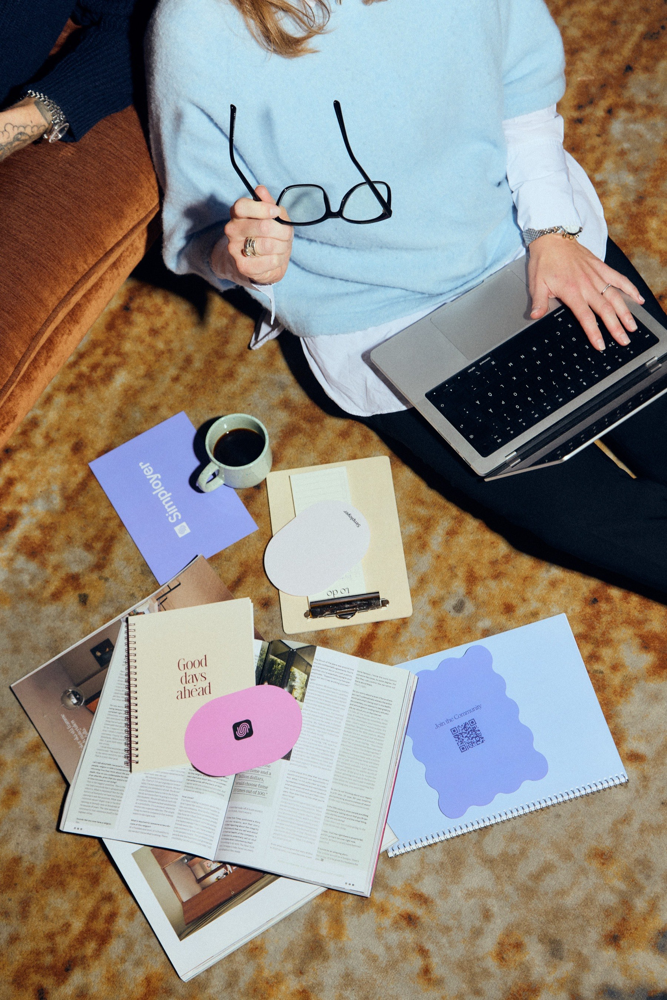
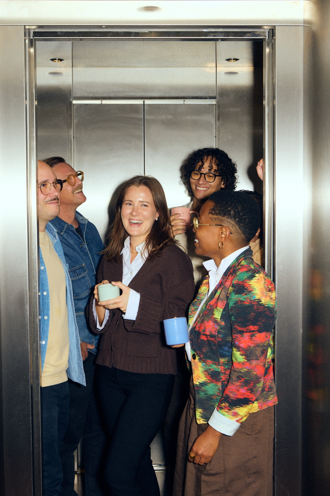
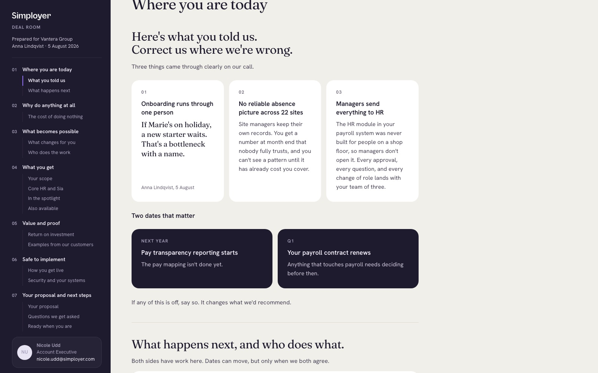
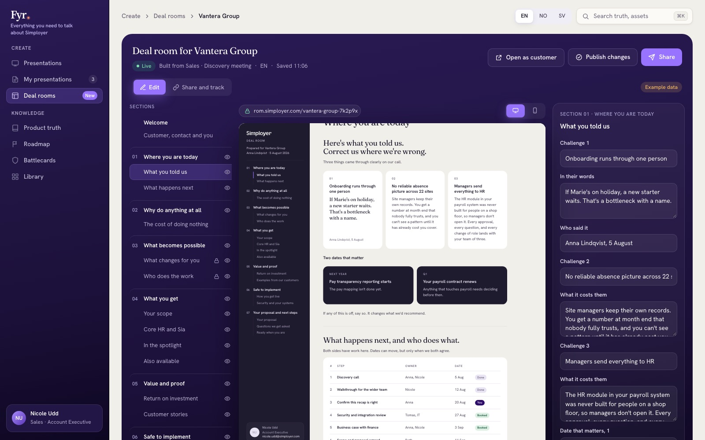
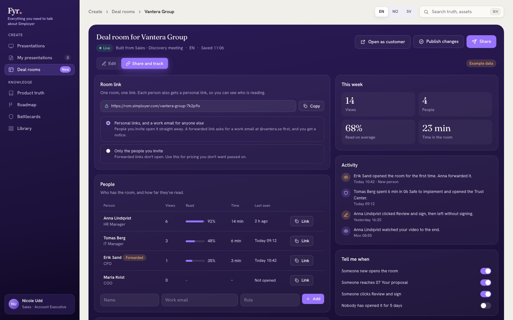
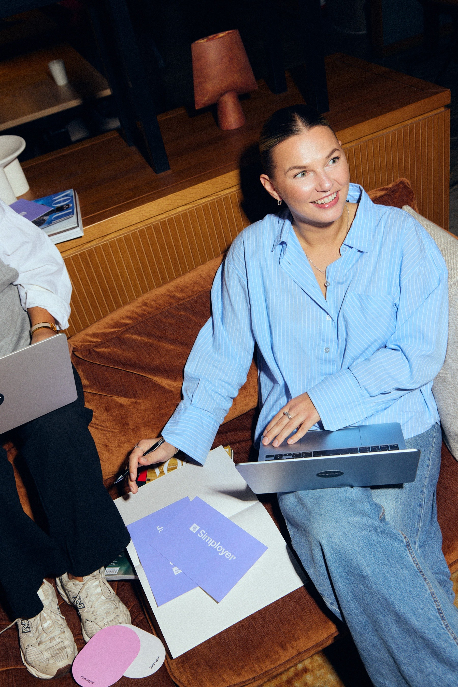

PMM hackathon · 10 November 2026
One page per deal. Built on Product truth, shaped by the meeting.
Photo: Simployer, Stockholm 2026
1–2 h
for sales, per room, on every deal
Manual
updates for PMM and for sales
Locked
design, with few choices
Licence
on top, for one job
Every room, every deal
of a rep’s time, to update one deal room.
×
=
1–2 h per room
The same room, made in Fyr.
Time per room: measured in the pilot

Built on Product truth and the Messaging Framework. Shaped by the meeting: the presentation, and tl;dv notes next.
Photo: Simployer, Stockholm 2026
Approved and current, with the Messaging Framework.
The presentation today. tl;dv notes next.
The brand design system and our photos.
Every block. Framework lines stay locked.
Example data
The brief · EN
Vantera GroupDiscovery meeting, 5 August

Read, by section

123
123460–120 h a month back, across 20 sellers. Deck and room in one place.
One source for every room. No drift.
One page to share inside their company.
A view of who reads. And the licence: SEK 360,000 a year
Photo: Simployer, Stockholm 2026
Today
Rooms, editor, links and tracking. D-036 accepted.
Next
Real deals, timed against today.
Then
In M4, or as v0.4 after the go-live on 27 Nov.
What we need to finish

From Product truth and a presentation in Fyr to a shared, tracked deal room.
Photo: Simployer, Stockholm 2026
← → or click to move · P notes · F full screen